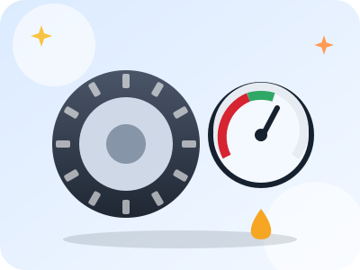

Pression
La pression des pneus se contrôle :
Cours · Équipements
Un véhicule mal entretenu est dangereux, pour toi comme pour les autres. Quelques contrôles réguliers évitent la plupart des pannes et beaucoup d'accidents.

Vérifie tes connaissances
La pression des pneus se contrôle :
La profondeur minimale des sculptures d'un pneu est de :
Pour contrôler l'huile moteur, il faut que la voiture soit :
Une voiture neuve passe son premier contrôle technique après :
À quelle fréquence vérifier les pneus ?
Au moins une fois par mois, et avant chaque long trajet. Un coup d'œil avant de partir permet de repérer un pneu dégonflé ou abîmé.
Puis-je rouler avec le voyant d'huile allumé ?
Non, c'est un voyant rouge : arrête-toi dès que possible en sécurité et coupe le moteur, puis vérifie le niveau.
Que risque-t-on avec des pneus lisses ?
135 € d'amende, une immobilisation possible du véhicule, et surtout une adhérence très faible sur sol mouillé.